Come per la vicina punta Grisis, anche per il monte Àrghine non si trova alcuna informazione da nessuna parte, ma soltanto un nome sulle carte topografiche. Difficile non rimanerne affascinati: sinceramente mi dispiace pubblicarne qualcosa su internet, giacché voi non potrete mai godere del fascino e delle emozioni che sono spettate a me.
Ben studiato binocolando dal Pisimoni, dal Cuzzer, dalla Punta Salvotis e dal Belepéit, dopo mesi finalmente ho realizzato questo mio desiderio.
Per l'ennesima volta salgo per il canale Lusument; a differenza della volta scorsa, scelgo l'accesso mediano al Pusti Gost, ovvero quello descritto in Trois Neris, in prossimità di due enormi macigni.
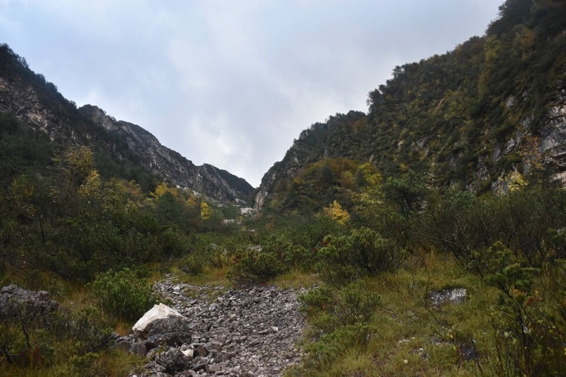 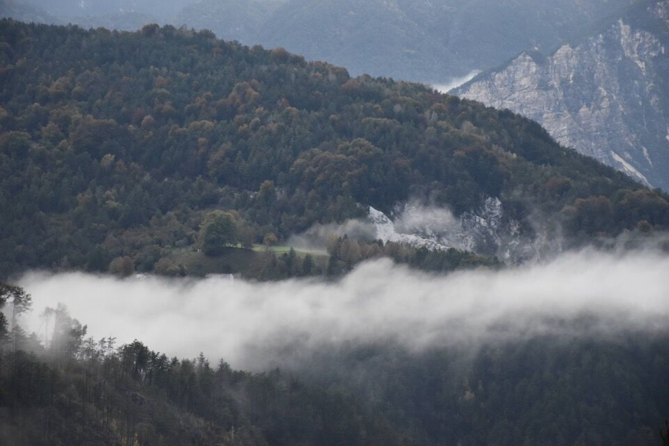Effettivamente è davvero un bel viaz che con un traverso porta nel Pusti Gost; ha il vantaggio che è più facile trovarlo in discesa.
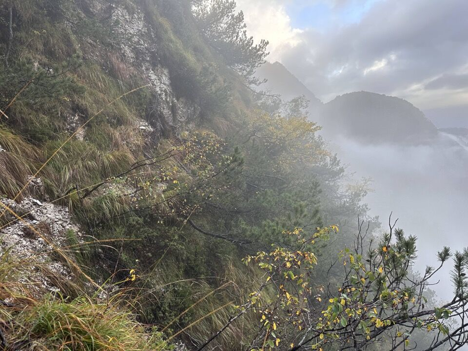Dal crinale del Pusti Gost, ormai affacciatomi sul vallone del rio Puntuz, appare questo bello spigolo, facente capo all'antecima Nord del M. Àrghine.
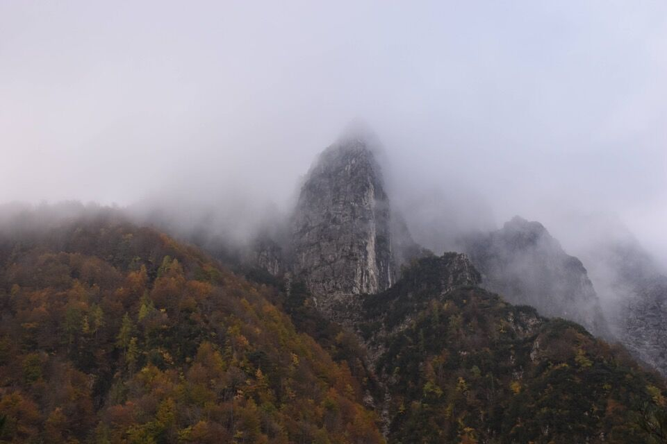La scorsa volta avevamo proseguito per cresta e poi eravamo scesi, senza traccia, ad intercettarne una buona; questa volta invece ho traversato subito, inizialmente su ottima traccia ma che poi si perde... uffa!
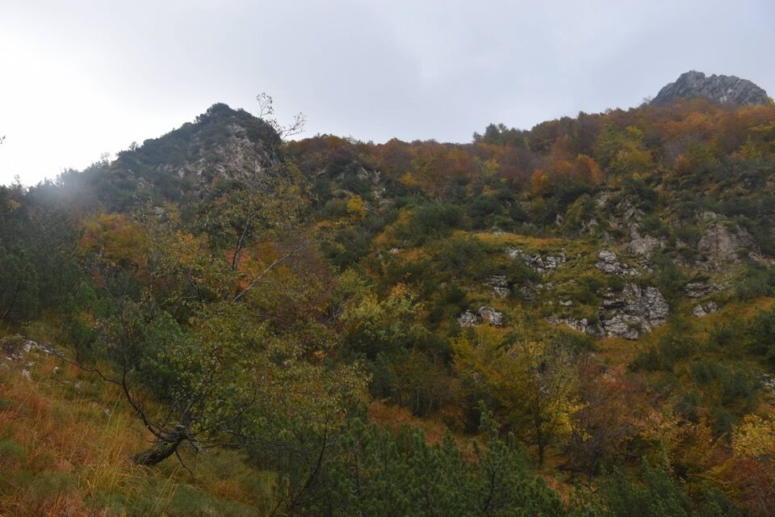La Punta Salvotis con il facile canale Est; col binocolo si vede l'omino costruito da me e Greta in cima. Peccato che da foto non renda il magnifico colore del bosco alla base.
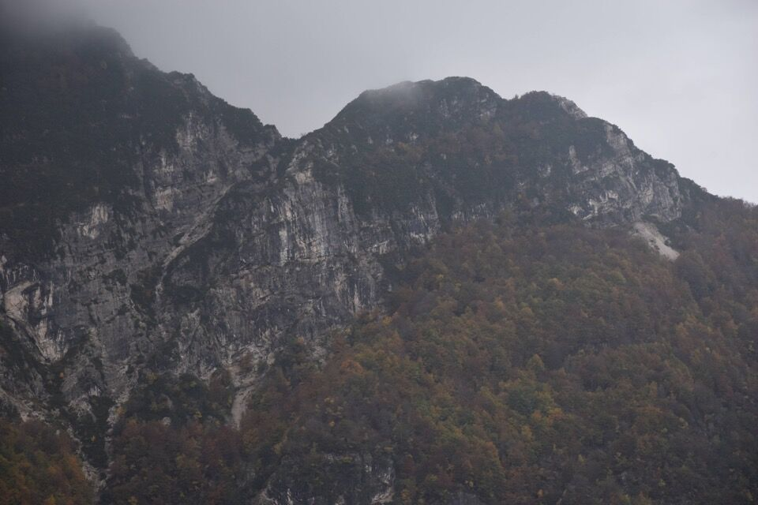Comunque in prossimità della forcella a Nord di Vetta Criuze mi sono tenuto più alto, in dx orografica, e una buona traccia l'ho trovata. Ho anche visto una traccia che passa per quei lastroni che caratterizzano la parte terminale del vallone del rio Puntuz in dx orografica: ciò significa che si può continuare per cresta dal Pusti Gost e traversare lì in alto, forse è la cosa più comoda, a cui avevamo pensato anche un anno fa ma non sapevamo se ci fossero dei salti in mezzo.
Poco prima della forcella ho trovato questo stupendo quanto spazio clapusç.
Finalmente arrivo alla forcella a Nord di Vetta Criuze.
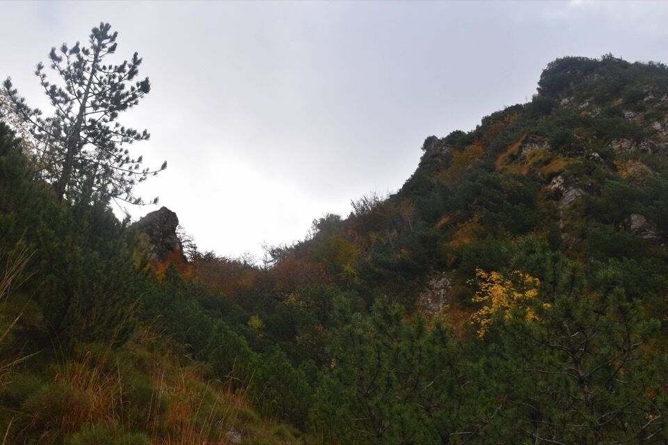 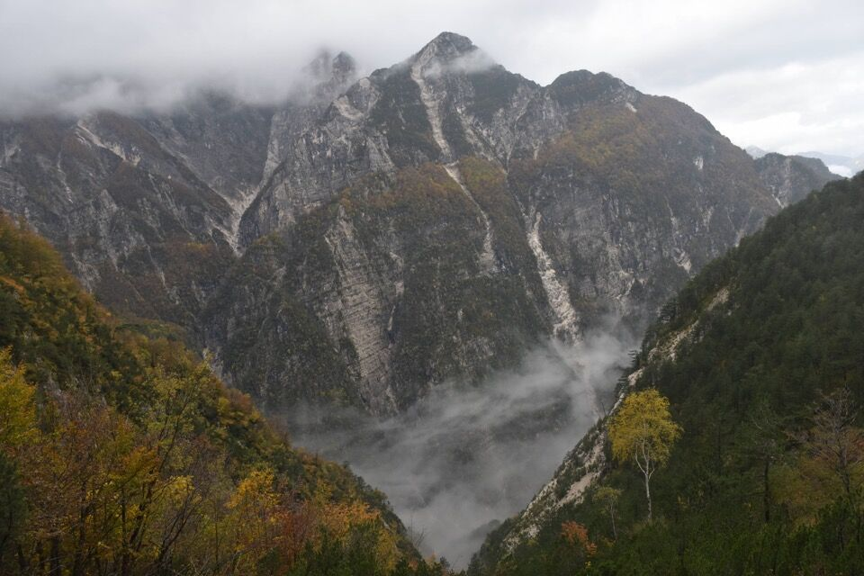Verso la val Resia, col coloratissimo M. Pléchie su cui transiterò durante la discesa.
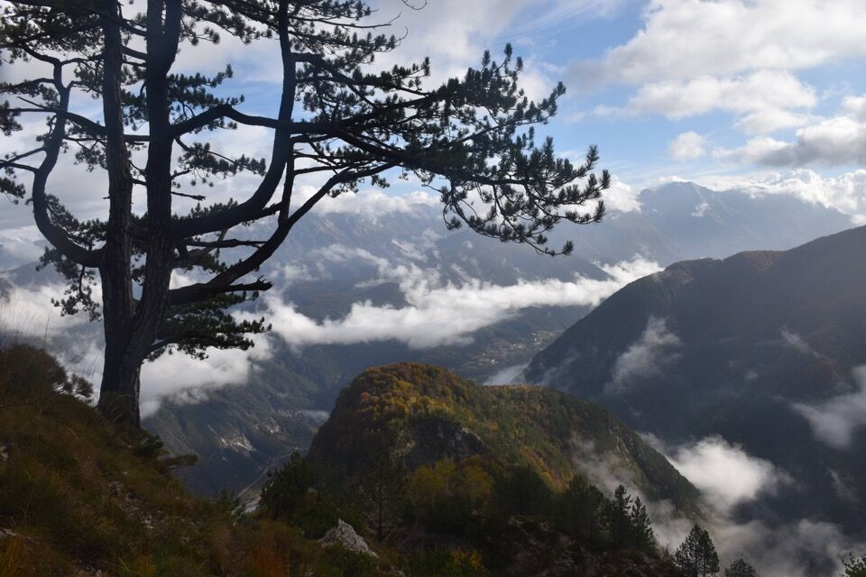Già che ci sono, faccio tappa a Vetta Criuze.
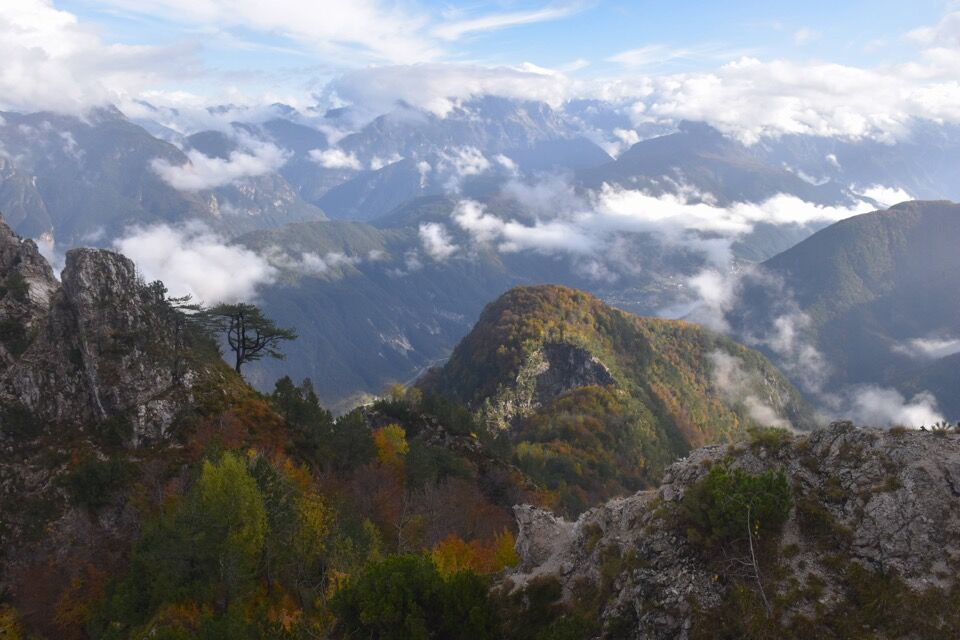 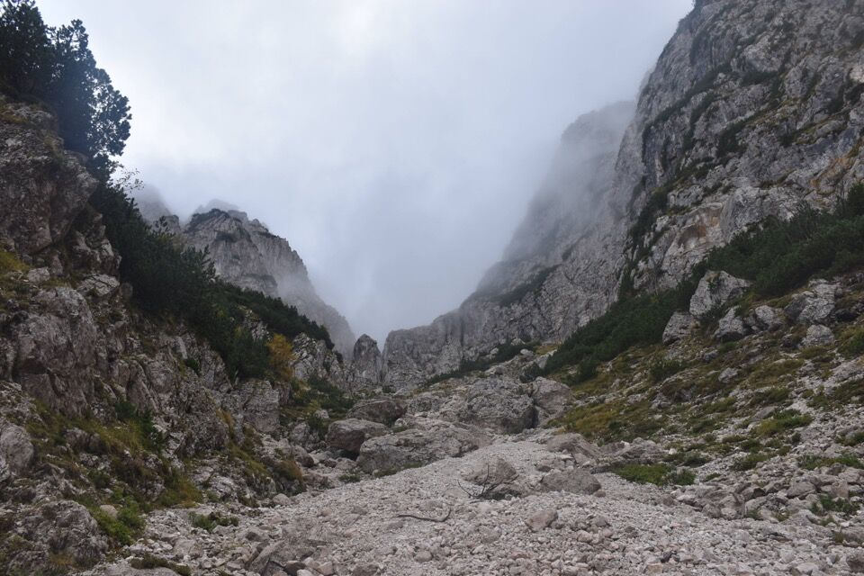Ormai è quasi fatta: in foto l'antecima Nord.
Il canale in foto poi precipita orridamente in alta val Resartico.
In quattro e quattr'otto sono arrivo in cima, vergine d'ogni segno. Non che durante il percorso, peraltro piuttosto complesso, abbia mai trovato nulla.
Speriamo che sia l'ometto costruito sia solido; so chi è stato su quella «puartate» fra i monti Crespana e Lávara.

Già che ci sono salgo - o meglio scendo - anche sull'antecima Nord, cosa che ho scoperto solo al momento essere possibile.
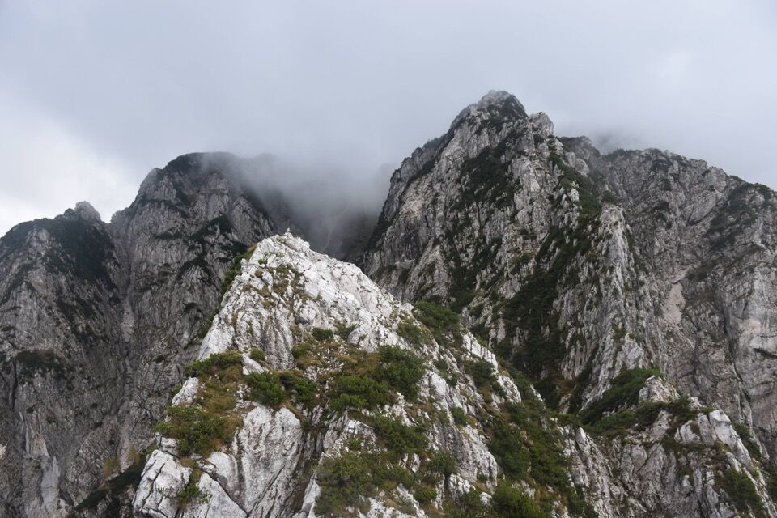Il paretone Est del M. Àrghine: effettivamente c'era un bel salto dalla cima.
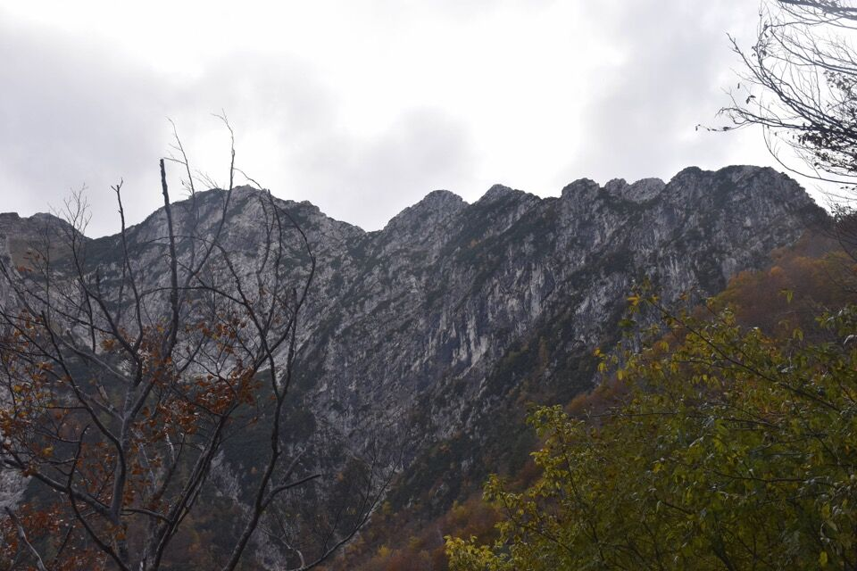Scendo per il monte Pléchie: percorso per nulla scontato.
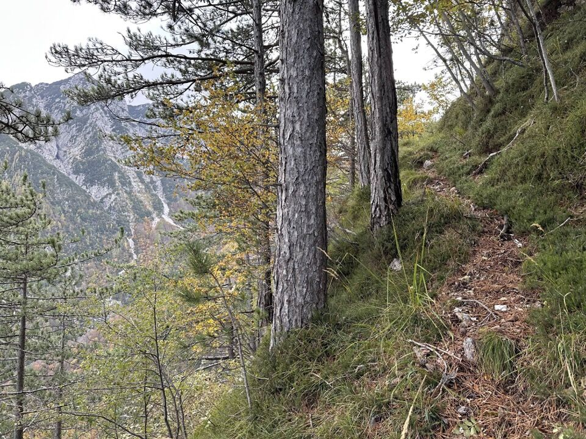Il crocefisso citato dalla relazione di Trois Neris, che ovviamente non trovavo. Vi assicuro che se non lo si trova non si scende e diventano guai seri.
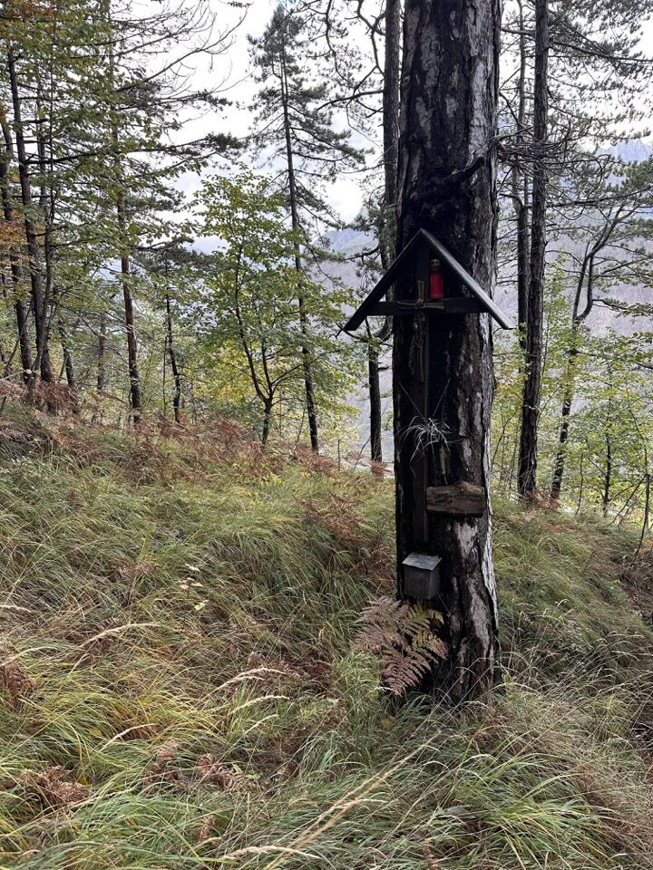 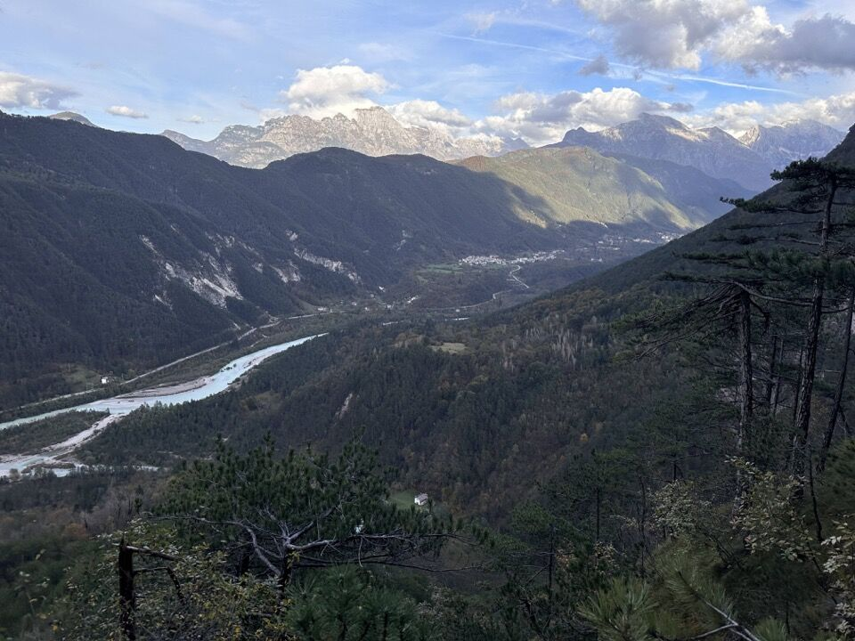